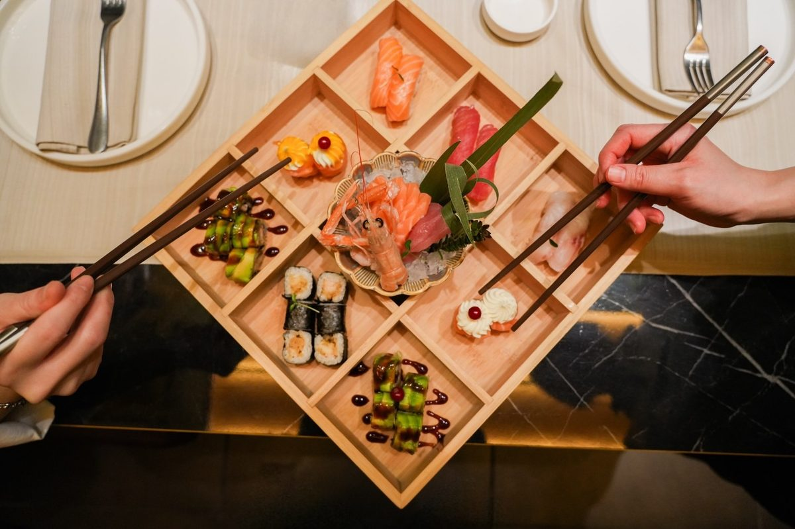

Home · Il Ristorante
Il Ristorante
Una cucina giapponese contemporanea, dove tecnica, freschezza e ospitalità si incontrano.
Home · Il Ristorante
Una cucina giapponese contemporanea, dove tecnica, freschezza e ospitalità si incontrano.
"Toki" richiama l'idea del tempo giusto: quello che serve per scegliere il pesce, tagliarlo con precisione e servirlo nel momento perfetto.
Nasciamo a Bologna con un'idea semplice: portare in tavola una cucina asiatica curata, che unisca la tradizione del sushi a una visione moderna e conviviale. Un luogo dove la qualità non è un'eccezione ma la regola, e dove ogni ospite si sente accolto.
La nostra formula All You Can Eat nasce da questa filosofia: dare la libertà di esplorare il menu senza rinunciare alla freschezza e alla cura di ogni singola portata.

Selezioniamo le materie prime con attenzione e le lavoriamo quotidianamente, perché la qualità si sente al primo assaggio.
Il rispetto per il prodotto passa dal gesto: tagli puliti, cotture precise, equilibrio tra tradizione e creatività.
Un servizio attento e un ambiente accogliente, per trasformare ogni cena in un momento da ricordare.

Linee pulite, materiali caldi e dettagli d'ispirazione giapponese: un ambiente contemporaneo pensato per mettere a proprio agio.
Dalla cena romantica alla tavolata tra amici, dai pranzi veloci agli eventi speciali: la sala di Toki si adatta a ogni occasione, mantenendo sempre la stessa atmosfera elegante e rilassata.
Prenota il tuo tavolo e lasciati guidare in un viaggio di sapori giapponesi.